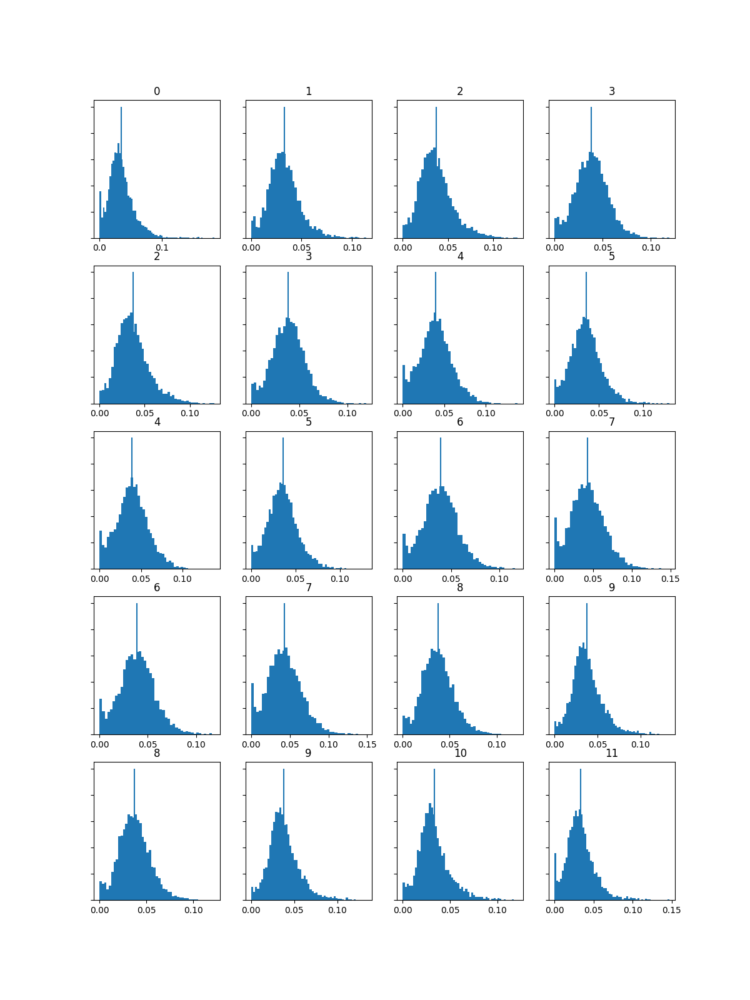
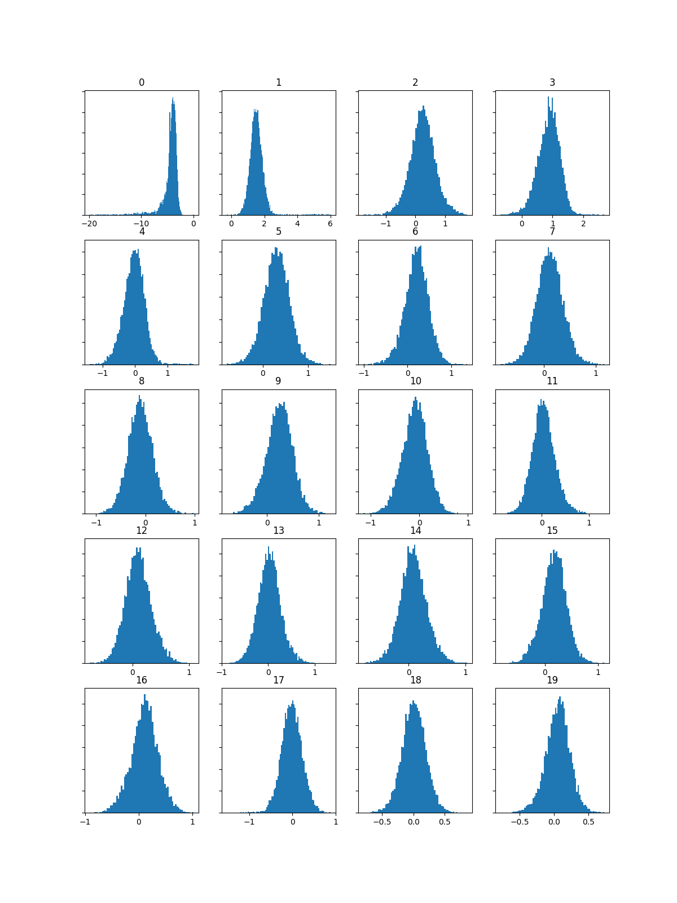
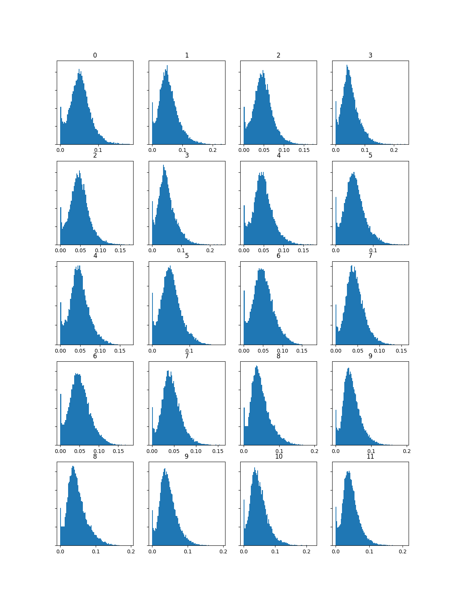
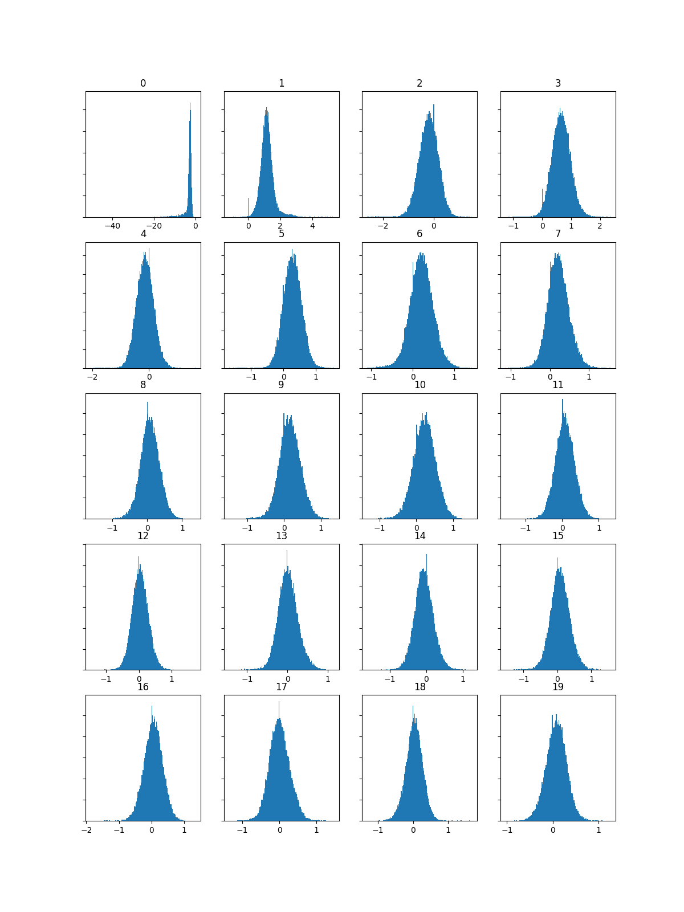
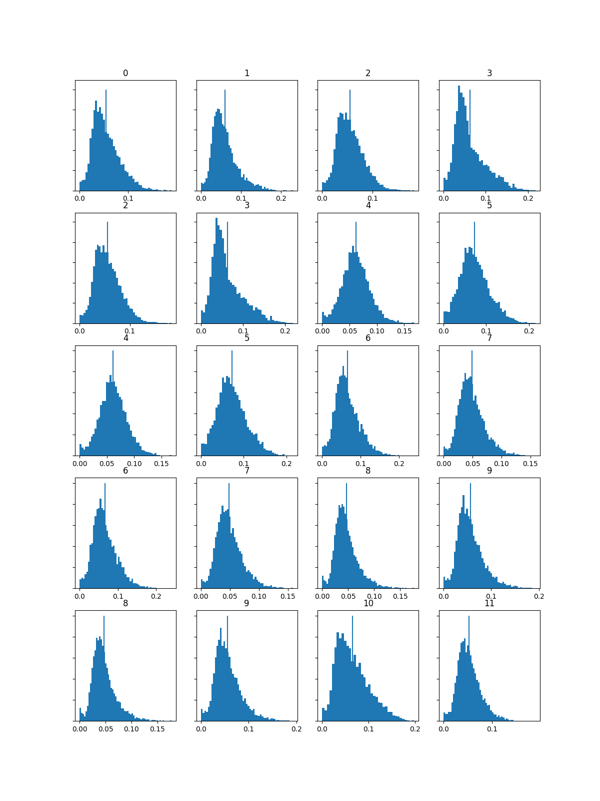
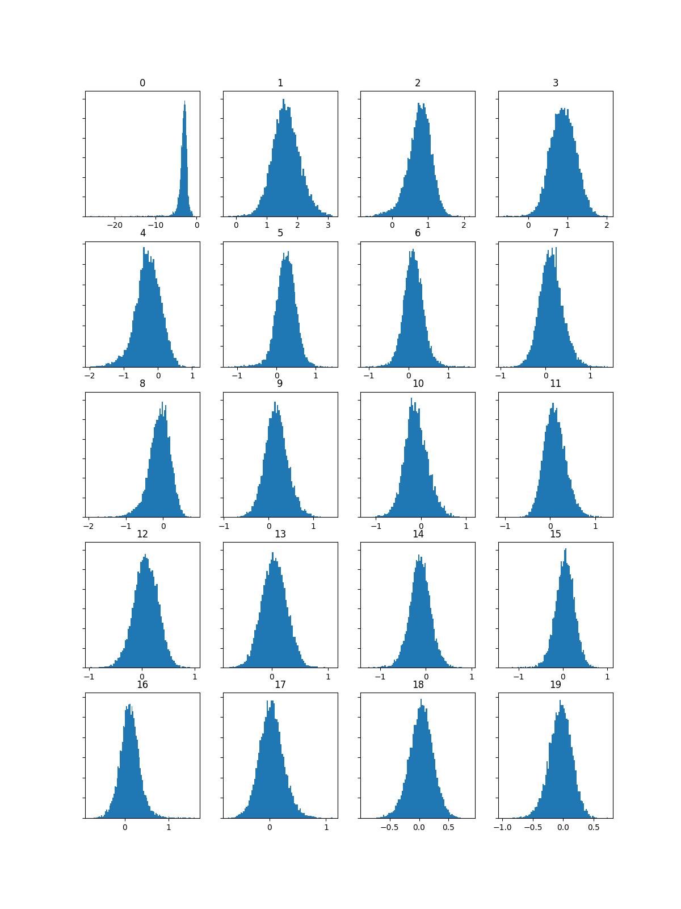

Analysing and Extracting Data From Audio
Sonic Visualiser Analysis
In The Dragon's Den

ANGEL OF SALVATION

Magic and Mayhem

Python CSV Analysis
The tracks I selected are all from the same genre, therefore should produce a similar MFCC output, however what can be clearly seen is that AOS is louder than the other two tracks, which is indeed true. The other tracks are older therefore they're quieter in terms of mastering, which is what's most likely caused this difference.
In The Dragon's Den
Chroma & MFCC


ANGEL OF SALVATION
Chroma & MFCC


Magic and Mayhem
Chroma & MFCC

